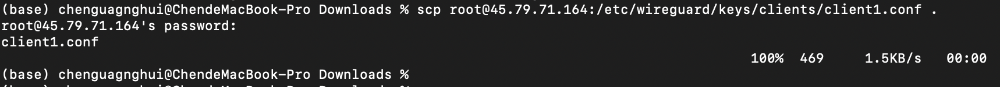
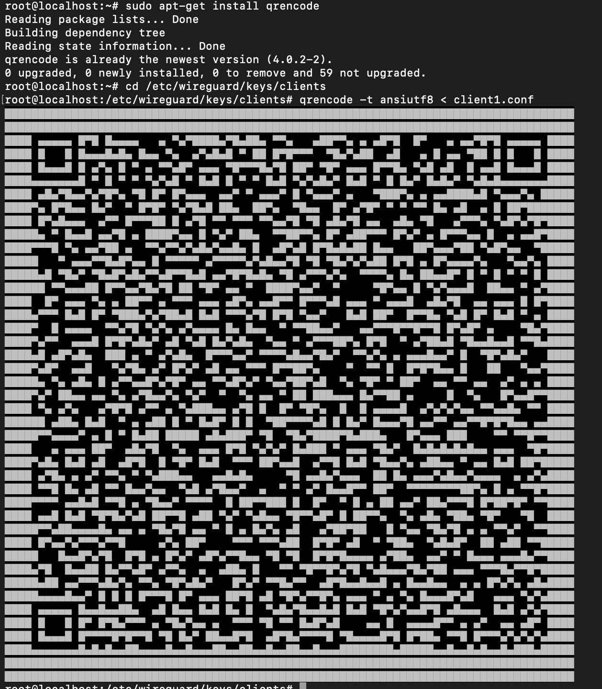
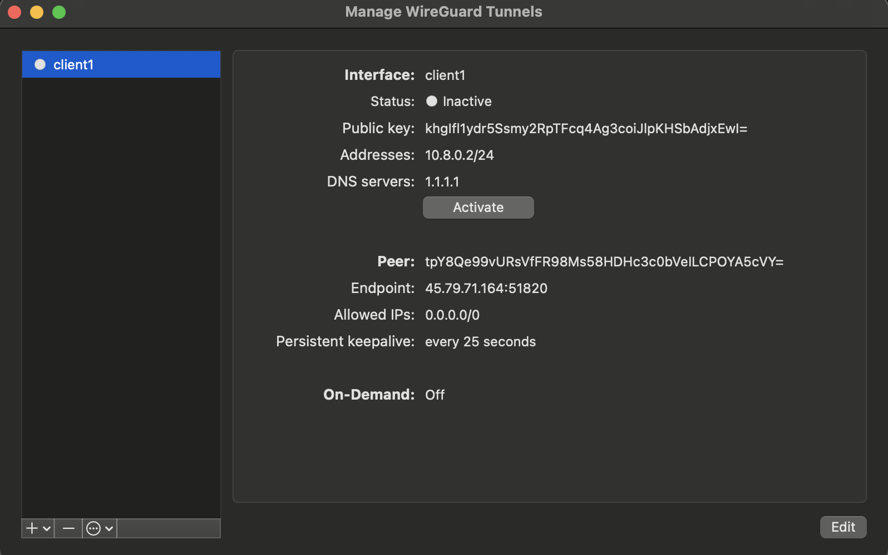
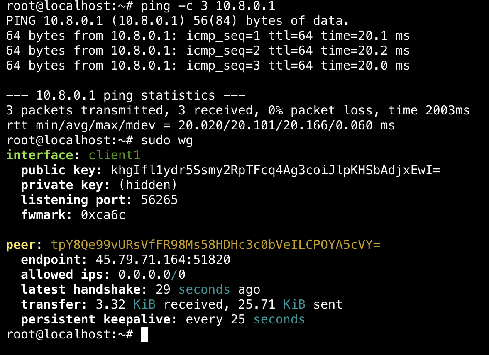

Part 3: Configuring Clients
When you look at the WireGuard interface on a fresh install, you’ll often see an empty “Tunnels” list or a simple log window. This guide shows you how to create a client configuration so you can connect to your WireGuard server.
Below are 13 steps that explain what you’re doing and why each step is necessary. We’ll also cover how to export or “download” the client configuration (.conf file) so you can use it on Windows, macOS, Linux, iOS, or Android.
Step 1: Plan Your Client IP Addresses
Pick a private IP range for your WireGuard network, e.g., 10.8.0.0/24.
Server’s IP might be 10.8.0.1/24.
Clients get 10.8.0.2/24, 10.8.0.3/24, etc.
Why This Step?
Each client needs a unique IP in the same subnet as the server’s VPN interface. For example, if the server is 10.8.0.1/24, the first client can be 10.8.0.2/24, the second can be 10.8.0.3/24, etc.
Step 2: Generate the Client Key Pair
On your Linux server (or wherever you keep keys):
sudo mkdir -p /etc/wireguard/keys/clients
sudo chmod 700 /etc/wireguard/keys/clients
cd /etc/wireguard/keys/clients
umask 077
wg genkey | tee client1-private.key | wg pubkey > client1-public.key
Why This Step?
WireGuard uses a public–private key pair. The private key stays on the client. The public key is added to the server’s configuration so the server recognizes and trusts this client.
Step 3: Add the Client’s Public Key to the Server
Open your server configuration file, e.g. /etc/wireguard/wg0.conf, and append a new [Peer] section:
Then restart or update your WireGuard interface:
(Or runsudo wg set wg0 peer <client1-public-key> allowed-ips 10.8.0.2/32 for a live update.)
Why This Step?
The server needs to know which public key belongs to which client, and what IP to assign them (10.8.0.2/32). If you don’t add a [Peer] entry for the client, the server won’t accept its connections.
Step 4: Create the Client Configuration File
Create a client1.conf (or any name you like) on your server or local machine:
[Interface]
# Client's VPN IP
Address = 10.8.0.2/24
# Client's private key (from client1-private.key)
PrivateKey = <contents-of-client1-private.key>
# (Optional) DNS server to use
DNS = 1.1.1.1
[Peer]
# Server's public key
PublicKey = <contents-of-server-public.key>
# Server's IP or domain, plus port
Endpoint = <server-ip-or-domain>:51820
# Route all traffic through VPN
AllowedIPs = 0.0.0.0/0
# Keeps NAT mappings alive
PersistentKeepalive = 25
Example
Above screenshot shows an example of client configuration file.
Why This Step?
Each client needs its own .conf file specifying:
- Its own IP address (Address).
- Its private key (PrivateKey).
- Where to connect (Endpoint) and which server key to trust (PublicKey).
Step 5: Understand How to Pick the Right IP
If your server is at 10.8.0.1/24, then:
- First client: Address = 10.8.0.2/24
- Second client: Address = 10.8.0.3/24
- Third client: Address = 10.8.0.4/24
Just make sure each client has a different IP in that range.
Why This Step?
No two clients can share the same IP address. You’re essentially building a small virtual LAN (10.8.0.x).
Step 6: Export (Download) the Client Config File
If you created client1.conf on the server, you need to get it onto the client machine (Windows, macOS, etc.):
- SCP (Linux/Mac): 
Example
The screenshot above demonstrates how to download the client configuration file using SCP.
- SFTP (Windows or Linux):
- Open an SFTP client (like WinSCP, FileZilla).
- Connect to your server.
- Navigate to
/etc/wireguard/keys/clients/. - Download
client1.confto your local machine. - Email or Cloud Transfer:
- (Less secure) You could email yourself
client1.confor use a cloud drive—be mindful of security.
Why This Step?
Your client device needs a local copy of client1.conf so it can import or load the config.
Step 7: Import on Windows
- Launch WireGuard on Windows.
- Click Import Tunnel(s) (or
Add Tunnel > Import from file). - Browse to
client1.confand click Open. - You should see a new tunnel in the list, typically named after the file.
Why This Step?
Windows WireGuard expects a .conf file. Once imported, you can toggle the tunnel “on” to connect.
Step 8: Import on macOS
- Open WireGuard from your Applications folder.
- Click the + button or “Import tunnel(s) from file.”
- Select
client1.conf. - A new tunnel appears in the list—toggle it to Activate.
Why This Step?
macOS works similarly to Windows: you import the config file to create a new WireGuard tunnel.
Step 9: Import on Linux (Client)
If you’re using Linux as a client:
# Place the config in /etc/wireguard/ (optional location)
sudo cp client1.conf /etc/wireguard/
# Bring up the tunnel
sudo wg-quick up /etc/wireguard/client1.conf
Check with:
Why This Step?
Linux uses wg-quick to bring the VPN interface up or down. You can store .conf files in /etc/wireguard/ for consistency.
Step 10: Optional – Generate a QR Code for Mobile
If you have iOS or Android:

Example
The above screenshot shows a successful an example QR code generation process.
Then in the WireGuard mobile app: 1. Tap Add. 2. Choose Scan from QR Code. 3. Point your camera at the terminal output.
Why This Step?
Scanning a QR code is often easier than manually transferring a .conf file to your phone.
Step 11: Start (Activate) the Tunnel
- Windows/macOS: Toggle the tunnel to ON or Activate.
- Linux:
sudo wg-quick up /etc/wireguard/client1.conf - iOS/Android: Tap the “Activate” or “Connect” slider. 
Tip
The above screenshot is from macOS; other types of devices offer similar operations to activate the tunnel.
Why This Step?
This is how you actually connect the client to the server via the WireGuard VPN.
Step 12: Verify Connectivity
- Ping the Server:
- Check IP (if routing all traffic):
- Visit an IP-checker site. It should show your server’s public IP if the tunnel is up.
- View “latest handshake” on the server: You should see something like: 
Example
The above screenshot shows a successful connection to the server through the tunnel.
Why This Step?
Ensures your client can reach the server (10.8.0.1), and that traffic is flowing through the VPN.
Step 13: Check Logs or Update On-The-Fly (Optional)
- View logs: (Adjust if your system uses a different service name.)
- Update peer config without restarting:
- Disconnect the client:
Why This Step?
- Logs help troubleshoot connection issues.
- On-the-fly updates let you add or remove peers without fully restarting the VPN.
- Disconnect safely closes the tunnel on the client side.
Conclusion
By following these 13 steps, you’ve:
- Decided which IP address each client will use.
- Generated a unique key pair for every client.
- Added each client’s public key to the server config.
- Created and exported a
.conffile for easy import on the client device. - Activated the tunnel on your client.
- Verified everything is working.
Next: You can add more clients simply by repeating these steps (using a different .conf for each one). If everything’s working, you now have a fully functional WireGuard VPN setup! Now you can move to Starting the VPN & Connecting.